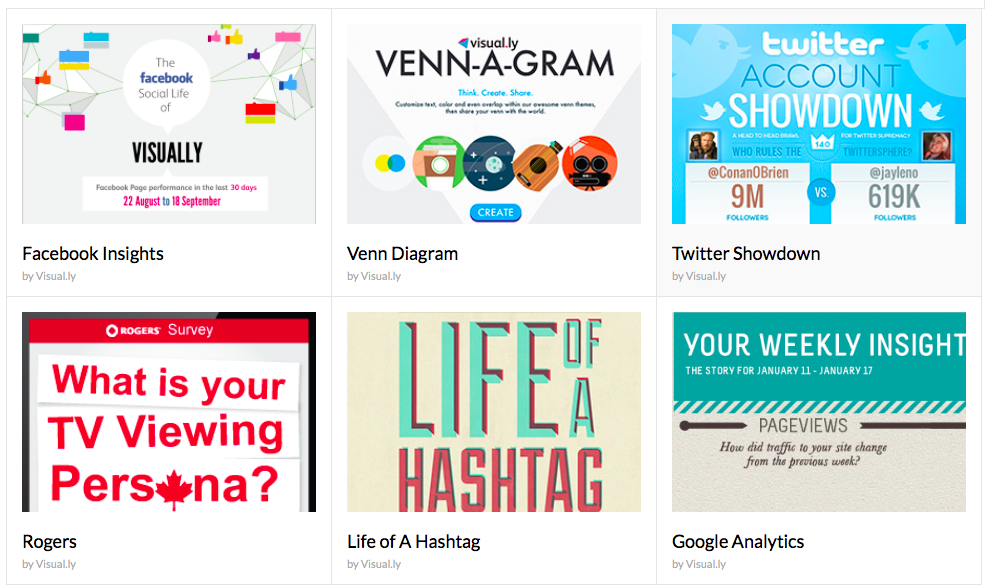
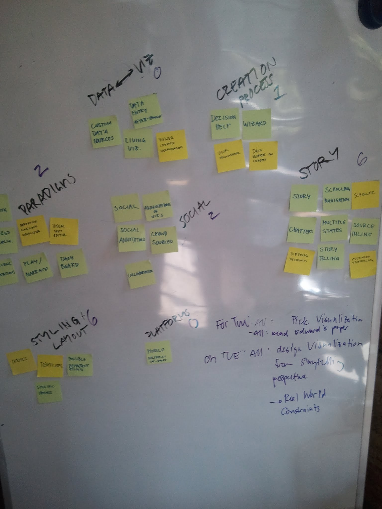
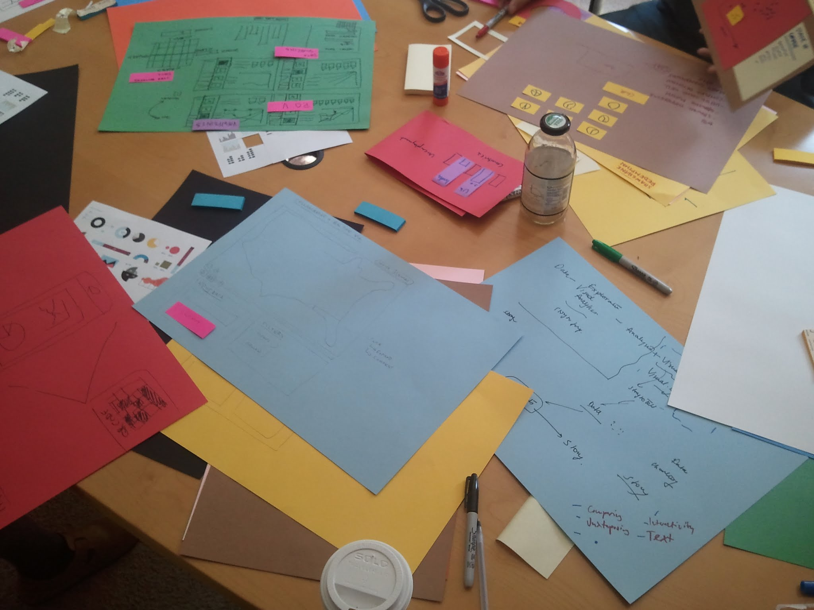

I was an intern at Visual.ly shortly after its formation. I did design and development for Visual.ly Create, a platform that enables non-developers to build data visualizations.

Visual.ly Create
I helped design a predecessor to the current Create platform which focused on generating basic interactive data visualizations rather than infographics.
Note: Due to an NDA, I cannot publicly display my design work on this project.

User Research
My team and I surveyed and interviewed users in order to identify key pain points with current visualization tools, as well as generate high-level designs for Visual.ly Create.

Prototyping
Early on, I worked on several prototypes of varying fidelity in order to identify the focus of Visual.ly's platform.
Note: Due to an NDA, I cannot publicly display my design work on this project.